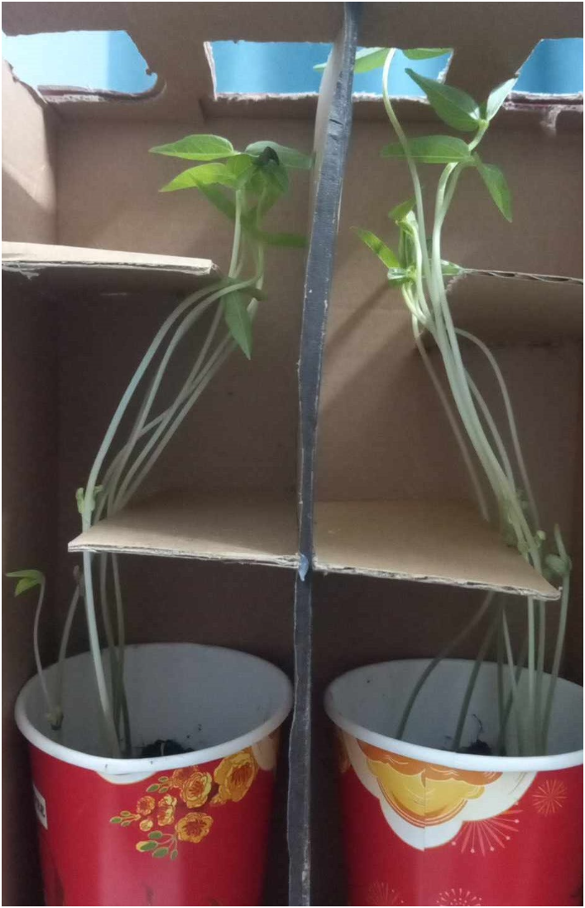

Plants, as sessile organisms, have evolved intricate mechanisms to sense and respond to environmental stimuli, among which light plays a pivotal role. Phototropism, the directional growth of plant organs in response to light gradients, represents one of the most fascinating and well-studied photomorphogenic responses. Through phototropism, plants can optimize their orientation towards light sources, thereby enhancing photosynthetic efficiency, nutrient acquisition, and reproductive success. In recent years, significant progress has been made in unraveling the molecular mechanisms underlying phototropism, particularly in the model plant Arabidopsis thaliana. This review provides an in-depth analysis of the molecular basis of phototropism, focusing on the roles of photoreceptor proteins, signal transduction pathways, regulation of auxin transport and signaling, integration of environmental cues, and the ecological and evolutionary significance of this phenomenon.
Molecular Basis of Phototropism
The molecular basis of phototropism involves a complex network of photoreceptor proteins and downstream signaling pathways that enable plants to detect and respond to directional light cues. In Arabidopsis, two main classes of photoreceptors, phototropins (phot1 and phot2) and phytochromes (phyA, phyB, phyC, phyD, and phyE), play crucial roles in mediating phototropic responses.
Phototropins are blue light-sensitive photoreceptor proteins responsible for regulating phototropism primarily in response to blue light wavelengths. These photoreceptors are localized in plant tissues and perceive changes in light intensity and direction. Upon exposure to blue light, phototropins undergo autophosphorylation, a process where the photoreceptor molecules phosphorylate themselves. This autophosphorylation event triggers a signaling cascade that leads to the activation of downstream components involved in phototropism.
One of the key downstream components activated by phototropins is non-phototropic hypocotyls 3 (NPH3), which plays a crucial role in phototropism. NPH3 interacts with phototropins and facilitates their localization to specific cellular sites, enabling the photoreceptors to initiate the phototropic response effectively. Additionally, root phototropism 2 (RPT2) is another important protein involved in root phototropism. RPT2 interacts with phototropins and NPH3, contributing to the redistribution of auxin and subsequent differential growth in response to light.
Furthermore, phytochromes are another class of photoreceptors that mediate responses to red and far-red light. Although they are not directly involved in phototropism mediated by blue light, phytochromes play essential roles in various light-mediated processes, including seed germination, shade avoidance, and flowering.
Signal Transduction Pathways
The signal transduction pathways involved in phototropism encompass a series of intricate molecular events that translate the perception of light into a physiological response within plant cells. Central to this process are the photoreceptor proteins, particularly phototropins, which initiate the signaling cascade upon activation by light.
When phototropins, such as phot1 and phot2, perceive directional light cues, they undergo conformational changes and subsequent autophosphorylation, a process where phosphate groups are added to specific amino acid residues within the photoreceptor proteins. This autophosphorylation event serves as the initial trigger for downstream signaling pathways.
Following phototropin activation, a cascade of molecular events is initiated, leading to the redistribution of auxin, a crucial plant hormone, and subsequent differential growth of plant organs. One key downstream component in this signaling cascade is non-phototropic hypocotyls 3 (NPH3), which interacts with activated phototropins and facilitates their localization to specific cellular sites.
Additionally, root phototropism 2 (RPT2) is another important protein involved in root phototropism. RPT2 interacts with phototropins and NPH3, contributing to the redistribution of auxin and subsequent differential growth in response to light.
The redistribution of auxin is a pivotal step in the phototropic response. Auxin promotes cell elongation on the shaded side of the organ, leading to bending towards the light source. This differential growth results in the curvature of plant organs towards or away from the light, depending on the direction of the light stimulus.
Regulation of Auxin Transport and Signaling
During phototropism, plants exhibit precise regulation of auxin transport and signaling pathways to facilitate directional growth in response to light stimuli. The PIN-FORMED (PIN) family of auxin efflux carriers and AUXIN1/LIKE-AUX1 (AUX1/LAX) auxin influx carriers are central to this regulation. PIN proteins control the directional movement of auxin out of cells, while AUX1/LAX proteins facilitate its entry into cells. This coordinated activity ensures the accumulation of auxin on the shaded side of the organ, where light exposure is reduced.
By establishing an auxin gradient, cells on the shaded side receive a higher concentration of auxin, which triggers differential growth responses, leading to bending towards the light source. This directional transport of auxin is crucial for guiding the plant's growth towards optimal light conditions, thereby maximizing photosynthetic efficiency and resource utilization.
Furthermore, auxin signaling plays a pivotal role in mediating phototropic responses. Upon reaching target cells, auxin interacts with AUXIN/INDOLE-3-ACETIC ACID (AUX/IAA) proteins, initiating a signaling cascade that regulates gene expression. The binding of auxin to AUX/IAA proteins leads to the degradation or inactivation of these repressor proteins, relieving their inhibition of auxin response factors (ARFs). As a result, ARFs are activated and translocated to the nucleus, where they modulate the expression of auxin-responsive genes involved in cell elongation and growth.
This transcriptional regulation ultimately promotes the bending of plant organs towards the light source by stimulating cell expansion on the shaded side. Thus, the intricate interplay between auxin transport and signaling pathways ensures the precise coordination of growth responses during phototropism, enabling plants to efficiently adapt to changes in light conditions and optimize their positioning for optimal light capture and resource acquisition.
Integration of Multiple Environmental Cues
The phenomenon of phototropism in plants is not solely governed by light; rather, it is influenced by a multitude of environmental cues, including light intensity, direction, quality, gravity, and mechanical stimuli. Plants have evolved sophisticated mechanisms to integrate these cues and modulate their growth and development accordingly, ensuring optimal positioning for light capture and resource acquisition.
For instance, in roots, negative phototropism allows for deeper penetration into the soil in response to light gradients. This behavior enhances water and nutrient uptake by ensuring that roots grow towards areas with higher moisture and nutrient levels. Conversely, in shoots, positive phototropism drives upward growth towards light sources, enabling plants to maximize their exposure to sunlight for photosynthesis.
By integrating multiple environmental cues, plants can adapt their growth strategies to efficiently utilize available resources and optimize their chances of survival and reproduction in diverse ecological niches. This intricate coordination of phototropic responses with other environmental stimuli underscores the versatility and adaptability of plants in responding to changing environmental conditions.
Ecological and Evolutionary Significance
Phototropism, the ability of plants to orient their growth towards light sources, holds significant ecological and evolutionary importance. By enabling plants to rapidly respond to changes in light conditions, phototropism enhances their ability to optimize growth strategies according to environmental cues. In natural habitats characterized by spatial and temporal variations in light availability, phototropism plays a crucial role in maximizing photosynthetic efficiency, nutrient acquisition, and reproductive success. Plants exhibiting efficient phototropic responses are better equipped to capture and utilize light energy for photosynthesis, leading to increased biomass production and competitive advantage in resource acquisition.
Moreover, phototropism contributes to the adaptation and survival of plants in diverse environments. Studies utilizing phototropism mutants in model plants like Arabidopsis have provided valuable insights into the ecological and evolutionary significance of this response. These mutants, with altered phototropic abilities, offer researchers the opportunity to understand how phototropism influences plant fitness and adaptation under different environmental conditions. Such studies have revealed the selective pressures acting on phototropism-related genes and pathways, highlighting their role in shaping plant evolution and diversification.

Conclusion
Phototropism is a fundamental process that allows plants to perceive and respond to light gradients, optimizing their growth and development in changing environmental conditions. Recent advances in understanding the molecular mechanisms of phototropism, particularly in Arabidopsis, have shed light on the intricate signaling pathways and regulatory networks involved in this response. Future research efforts aimed at elucidating the dynamic interplay between photoreceptors, auxin signaling, and environmental cues will further enhance our understanding of phototropism and its ecological relevance in shaping plant adaptation and evolution.